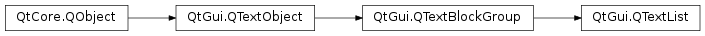

QTextList¶
Synopsis¶
Functions¶
- def
add(block) - def
count() - def
item(i) - def
itemNumber(arg__1) - def
itemText(arg__1) - def
remove(arg__1) - def
removeItem(i) - def
setFormat(format)
Detailed Description¶
The
PySide2.QtGui.QTextListclass provides a decorated list of items in aPySide2.QtGui.QTextDocument.A list contains a sequence of text blocks, each of which is marked with a bullet point or other symbol. Multiple levels of lists can be used, and the automatic numbering feature provides support for ordered numeric and alphabetical lists.
Lists are created by using a text cursor to insert an empty list at the current position or by moving existing text into a new list. The
QTextCursor.insertList()function inserts an empty block into the document at the cursor position, and makes it the first item in a list.listFormat = QTextListFormat() if list: listFormat = list.format() listFormat.setIndent(listFormat.indent() + 1) listFormat.setStyle(QTextListFormat.ListDisc) cursor.insertList(listFormat)The
QTextCursor.createList()function takes the contents of the cursor’s current block and turns it into the first item of a new list.The cursor’s current list is found with
QTextCursor.currentList().The number of items in a list is given by
PySide2.QtGui.QTextList.count(). Each item can be obtained by its index in the list with thePySide2.QtGui.QTextList.item()function. Similarly, the index of a given item can be found withPySide2.QtGui.QTextList.itemNumber(). The text of each item can be found with thePySide2.QtGui.QTextList.itemText()function.Note that the items in the list may not be adjacent elements in the document. For example, the top-level items in a multi-level list will be separated by the items in lower levels of the list.
List items can be deleted by index with the
PySide2.QtGui.QTextList.removeItem()function.PySide2.QtGui.QTextList.remove()deletes the specified item in the list.The list’s format is set with
PySide2.QtGui.QTextList.setFormat()and read withPySide2.QtGui.QTextList.format(). The format describes the decoration of the list itself, and not the individual items.
-
class
PySide2.QtGui.QTextList(doc)¶ Parameters: doc – PySide2.QtGui.QTextDocument
-
PySide2.QtGui.QTextList.add(block)¶ Parameters: block – PySide2.QtGui.QTextBlockMakes the given
blockpart of the list.
-
PySide2.QtGui.QTextList.count()¶ Return type: PySide2.QtCore.intReturns the number of items in the list.
-
PySide2.QtGui.QTextList.item(i)¶ Parameters: i – PySide2.QtCore.intReturn type: PySide2.QtGui.QTextBlockReturns the
i-th text block in the list.
-
PySide2.QtGui.QTextList.itemNumber(arg__1)¶ Parameters: arg__1 – PySide2.QtGui.QTextBlockReturn type: PySide2.QtCore.intReturns the index of the list item that corresponds to the given
block. Returns -1 if the block was not present in the list.
-
PySide2.QtGui.QTextList.itemText(arg__1)¶ Parameters: arg__1 – PySide2.QtGui.QTextBlockReturn type: unicode Returns the text of the list item that corresponds to the given
block.
-
PySide2.QtGui.QTextList.remove(arg__1)¶ Parameters: arg__1 – PySide2.QtGui.QTextBlockRemoves the given
blockfrom the list.
-
PySide2.QtGui.QTextList.removeItem(i)¶ Parameters: i – PySide2.QtCore.intRemoves the item at item position
ifrom the list. When the last item in the list is removed, the list is automatically deleted by thePySide2.QtGui.QTextDocumentthat owns it.
-
PySide2.QtGui.QTextList.setFormat(format)¶ Parameters: format – PySide2.QtGui.QTextListFormatSets the list’s format to
format.See also
PySide2.QtGui.QTextList.format()
© 2018 The Qt Company Ltd. Documentation contributions included herein are the copyrights of their respective owners. The documentation provided herein is licensed under the terms of the GNU Free Documentation License version 1.3 as published by the Free Software Foundation. Qt and respective logos are trademarks of The Qt Company Ltd. in Finland and/or other countries worldwide. All other trademarks are property of their respective owners.